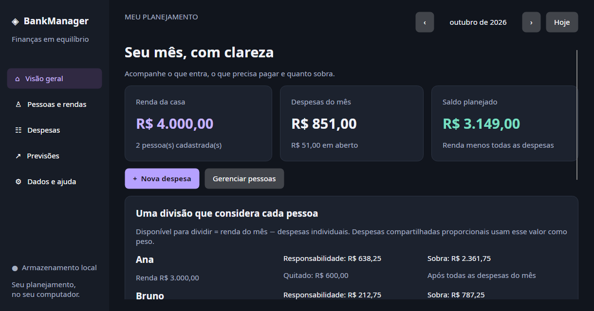

BankManager
Finanças pessoais e familiares em um aplicativo desktop. Rateio de despesas, histórico mensal, previsões e armazenamento local.
Código gerado e ajustado pela IA (Codex). Minha participação foi definir a proposta, os requisitos e delegar o desenvolvimento.